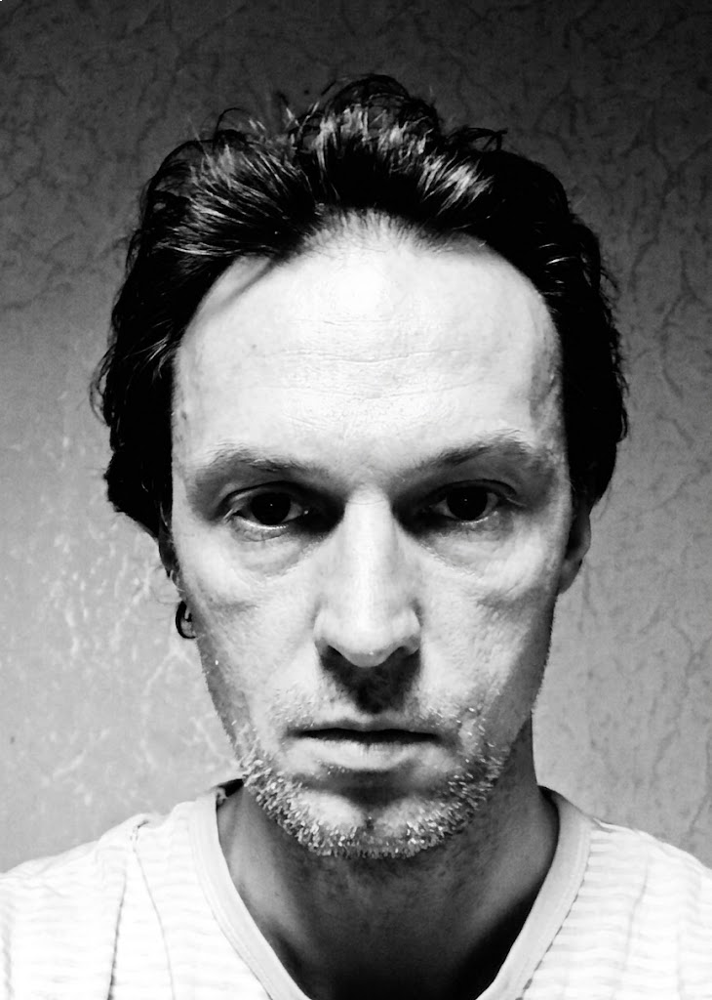
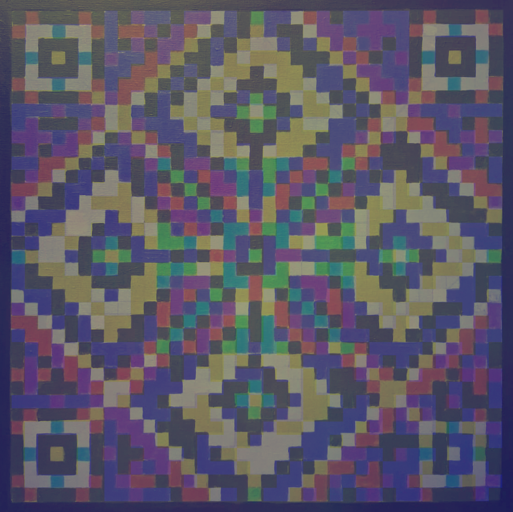

Універсальна модель SCI (Spectral Channel Integrity)
Алгоритм спектральної гомогенізації середовищ для комп'ютерного зору, стеганографії та високоточного відтворення кольору.
Fig 1: Замкнута система спектральних констант та фіолетовий якір балансування (Reference Violet Anchor).

Fig 2: Порівняльний аналіз каналів: ідеальне розділення (А), міжканальне перекриття (В), лінеаризований відгук SCI (С).

Fig 3: Процес спектрального масштабування (Spectral Scaling) та приведення кривих до спільних меж Uref та Lref.
Суть проблеми та фізична природа crosstalk
Запропоноване рішення та суть моделі SCI
3. Математична оборотність
Крок 1. Фіксація стану
Збереження пропорцій спектральних каналів на фізичному носії (папір, полотно, пластик). Співвідношення енергії між червоним, зеленим та синім каналами залишається незмінним.
Крок 2. Оцифрування без втрат
Фізичний відбиток повторно оцифровується камерою або сканером. Отримане數位 зображення містить той самий набір пропорцій каналів, що й оригінальний SCI-файл.
Крок 3. Лінійне нормування
Застосовується просте лінійне нормування контрасту (розтягнення динамічного діапазону від мінімального до максимального значення) без ICC-профілів.
Крок 4. Повна регенерація
Результатом є зображення, ідентичне вихідним RGB-характеристикам. Кольорова інформація відновлюється без втрати структури сигналу.
4. Прикладне значення та діючі компоненти екосистеми
Spectrum QR
Генератор та сканер багатошарових кольорових QR-кодів (Spectrum QR). Інформація кодується одночасно в червоному, зеленому та синьому каналах.
QRnament v3.5
Генератор та сканер орнаментальних QR-кодів (QRnament), інтегрованих у складні візерунки.
Важливе зауваження: Наразі обидва генератори працюють лише в цифровому середовищі. Розробка програмного модуля, який автоматично застосовуватиме SCI-балансування до згенерованих кодів, триває.


Реальний експеримент: Автор наніс акриловими фарбами на художнє полотно кольоровий QR-код за принципами SCI (балансування відносно спектрального лімітера).
Результат: код успішно розпізнається звичайним смартфоном при різних умовах освітлення.
5. Майбутнє проєкту: автоматизація калібрування ПЗ
Наразі розробляється програмне забезпечення, яке автоматизує весь процес застосування моделі SCI для масового користувача без ручного прорахунку спектральних кривих.
Перспективний функціонал інструменту (SaaS / Web App):
- Автоматичне калібрування: Налаштування под конкретні пігменти, принтер та матеріал.
- Генерація тест-патчів: Друк та аналіз тест-патчу «Спектральні конуси».
- Soft-proofing: Попередній перегляд реального фізичного результату та спотворень на екрані.
- Автоматичний SCI-препроцесинг: Потокова підготовка та лімітування зображень.
Поточний статус: Теоретична база повністю сформована та підтверджена натурними експериментами. Проєкт відкритий для співпраці з розробниками ПЗ та фахівцями у сфері комп'ютерного зору (Computer Vision) для спільної реалізації ядра алгоритму.
1. Калібрування принтера та матеріалу
Друк індивідуального тест-патчу на цільовому обладнанні. Аналіз фотографії відбитка через камеру для побудови матриці спотворень та автоматичного лімітування зображення.
2. Калібрування монітора та Soft-proofing
Налаштування відображення під конкретний аналоговий відбиток. Дозволяє дизайнеру бачити на моніторі не абстрактні кольори, а реальний результат на папері.
3. Контроль якості та сепарація
Об'єктивний критерій сепарації каналів без використання дорогих спектрофотометрів за допомогою спектральних конусів поруч із репродукцією.
4. Автоматичний препроцесинг
Алгоритмічний модуль для автоматичного ре-маппінгу та нормалізації вихідних файлів перед відправкою на друк відповідно до моделі SCI.